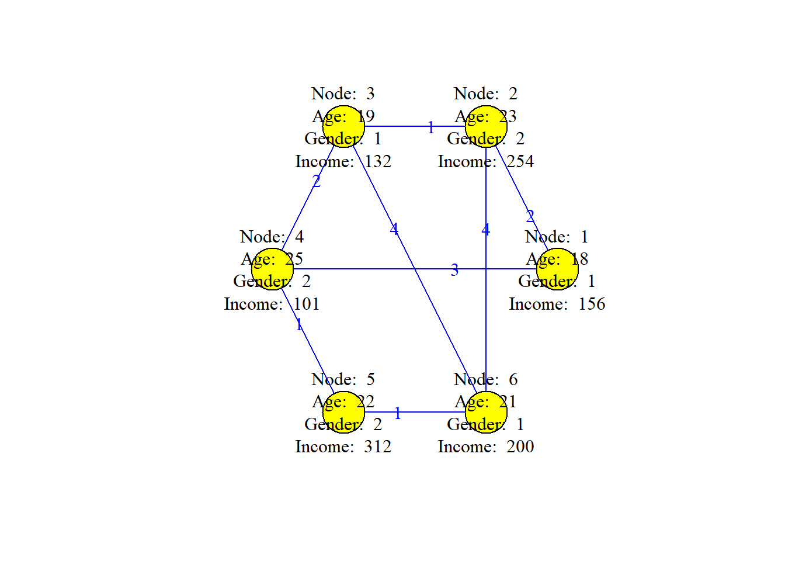
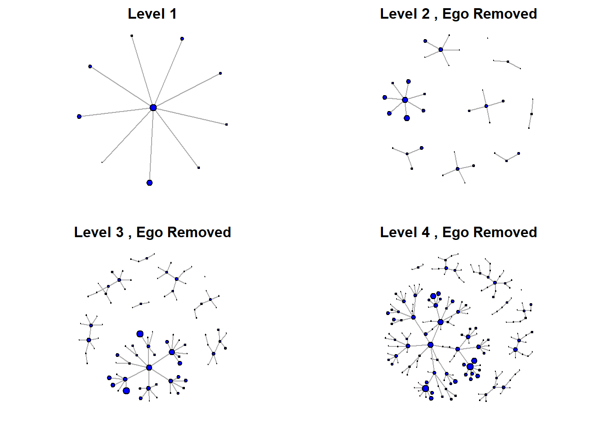

In this document we are going to set the basic concepts in Networks. Since networks can appear in almost any context, the ideas and definitions we propose here must be rather general in the sense that they cannot be constrained to be domain dependent, but rather they must be domain agnostic.
Social Network
The key concepts in a social network are: actor, relational tie, dyad, triad, subgroup, group, relation and network. Let’s see what each of them means in order to construct the basic idea of what a social network is.
Actors
Intuitively, we understand a network as a connection between different objects. Whatever its nature, we call them actors. Then, formally, we can say that the actors are the social entities in any social network.
Social Network applications focus on collections of actors that are all of the same type: People, Cities, Countries, Firms, Words,… However, note that this does not limit a network to have only one type of actors, i.e. we may have a network made from firms and customers, for example.
Back to top
Relational Tie
It is through the linkage between the actors that we create a social network. These links receive many names: connections, ties, relational ties, edges or simply links.
The defining property of a relational tie is that it establishes a linkage between a pair of actors:
- Evaluation of one person by another (friendship, liking,…)
- Physical connections (rivers, bridges, wires,…)
- Association or affiliation (joining social events,…)
- Biological relationships (kinship, proteins cycles,…)
Of course, just as we could have multiple sets of actors, we can have multiple relational ties forming a multinetwork, joining the same set of actors, or we may have different types of ties connecting actors of different sets and actors in the same sets, this can be used in recommendation systems for example.
Back to top
Dyads and Triads
Each tie in any network connects at most two actors, this means that there may be closed links going out from one actor onto itself, but we have links between two actors as the most common situation. There will never be a connection between more than two actors.
In this context, a dyad is the most basic linkage between two actors. The tie is an inherent property of the pair and not of the isolated individuals. The Dyadic Analysis, then, focuses on studying properties of pairwise relationships: friendship, follower or followee, are some examples.
A Triad is a subset of three actors and the possible ties among them. Then in a triad we will have, at least two links and three actors. In this context, transitive triads are very important: If A likes B and B likes C, then A likes C.
Back to top
Subgroups and Groups
A generalization in the hierarchical family of dyads and triads is to generate connections between an arbitrary number of actors. This is precisely a Subgroup: any subset of actors and all the ties among them.
Finding and classifying local subgroups under specific criteria is basic in social analysis. This includes:
- Clusters
- Communities
- Trees and Forests,…
On the other hand, and growing the number of actor, we define a Group as the collection of all the actors on which ties are to be measured. We must say that all may be large, but not infinity, then a group is a finite set of actors.
Since, formally, we work with sets we should be able to be explicit with the conditions under which an actor belongs to them, and this is not an easy task since we need to give the boundary of this set and how the sampling may be performed in it once we decide to gather the network data.
Then again, a network may contain different groups corresponding to different types of actors. Then we will denote as actor set the complete collection of actors in a network.
Back to top
Relation
Just as we have a group and an actor set, we may do the same with the relational ties. Then the collection of ties of a specific kind among members of a group is called a relation
- Friendship among students in a class
- Trade ties among countries…
It is important to consider that the ties themselves only exist between specific pairs of actors while the relation is the abstract connection between all the actors. We may have many different types of relational ties and then we can have a set of relations.
Back to top
Social Network
With all the previous ideas, we can finally define a social network as a finite set of actors and the relations defined on them.
It is clear that only a set of actors would make this the usual statistical analysis and that it is the existence of relational information which is critical in the definition of social network.
Back to top
Network Data
As we have already concluded, Social Data consists on at least one structural variable measured on a set of actors.
It is the theory behind a study which should give us the motivations to determine which variables to measure and often which techniques are more suitable for a study, for example, gathering data through a questionnaire or using a census. Also, the nature of the relational ties and connections determines the analytic methods to use
Back to top
Types of Variables
From the point of view of networks, we find:
- Composition Variables: measured on the level of individual actors. These are the actor attributes (the usual cross-sectional, time series or panel data for statistical analysis).
| 1 |
18 |
F |
156 |
| 2 |
23 |
M |
254 |
| 3 |
19 |
F |
132 |
| 4 |
25 |
M |
101 |
| 5 |
22 |
M |
312 |
| 6 |
21 |
F |
200 |
- Structural Variables: measured on pairs of actors, are the cornerstone of a social network dataset. These measure the ties of a specific type between pairs of actors.
Suppose that our previous dataset is for coworkers and we propose a connection based on the number of emails sent between any two actors then we may have the following dataset
| 1 |
2 |
2 |
| 1 |
4 |
3 |
| 2 |
3 |
1 |
| 2 |
6 |
4 |
| 3 |
4 |
2 |
| 3 |
6 |
4 |
| 4 |
5 |
1 |
| 5 |
6 |
1 |
then we can see this network as follows (the links are blue and the numbers in them are the weights, i.e. the number of emails sent)

Back to top
Types of Networks
There are many types of networks, however, in this case we are going to classify them with respect to the different sets of actors that appear in them. We use the term mode to denote the distinct set of entities on which the structural variables are measured.
Back to top
One-Mode Networks
A one-mode network is the most common type of network, where all the actors come from one single set:
- People
- Firms
- Countries (…)
The relational ties measured in this type of networks is typically viewed as a representation of a particular and specific connection bewteen the nodes:
- Friendship, Sentimental status, Liking,…
- Transactions, Movements,…
- Kinship,…
We are not restricted to measure only one type of tie, we are just restricted to measure in one group of actors.
Back to top
Ego Network
The Egocentric Networks are the social networks of a particular actor. In its most basic form it is just the usual star network with a central node and all the others directyl connected to it (as could be a graph of all my followers in Twitter), however, if we increase the depth of the network by allowing an increased number of levels of connections we find structures relevant to study the surroundings of an individual.
In these networks, the central actor is known as ego and all the others as alter, however, once we make the graphical representation it is usually interesting to remove the ego node and assume it implicitely.
To make the following graphs we have randomly generated a network and then select the node with the highest number of connections, a hub, then we have generated the different networks by allowing an increased distance from this hub (level)

By the end we can consider a social network as the union of different ego networks.
Back to top
Two-mode networks
Two-mode networks involve measurements in two different sets of actors, people and firms with recommendations, trades and consumers activity. In this case, the relational ties, can be of different kinds: from actors of one set to another or between subsets of actors in the same set.
If the relations measure ties between the actors in one set to actors in another set, we call this a dyadic two-mode network. If a network is bimodal, at least one of the ties measured must be of this kind.
Affiliation Network
An Affiliation network is a special type of two-mode network in which there is only one set of actors and a second set of events, then the relational tie connecting both sets can be denoted as participation or belonging.
The events are not defined on pairs of actors, i.e. they are not the relational tie, but on subgroups of any size of actors of the first mode.
Examples of this type of network are
- Users in Facebook groups or pages,
- Tweeple retweeting,
- Attendance to social events,
- Actors appearing in films,
- Words in topics of a conversation,…
A common strategy in the study of these networks is the projection into one of the modes which converts the affiliation in two effective one mode networks.
Back to top
Data Sets
Along the course we will work with different datasets collected in different R packages so it is a good idea installing them. Some of them come from the igraphdata package. Uset
To see the datasets included.
Other package we will use is sand, which is the companion package to the R-book of the course, then in it you will find the datasets to use along the book lectures (it also contains the codes of each chapter). Use
to see the datasets it includes.
Back to top
1 Social Network
The key concepts in a social network are: actor, relational tie, dyad, triad, subgroup, group, relation and network. Let’s see what each of them means in order to construct the basic idea of what a social network is.
1.1 Actors
Intuitively, we understand a network as a connection between different objects. Whatever its nature, we call them actors. Then, formally, we can say that the actors are the social entities in any social network.
Social Network applications focus on collections of actors that are all of the same type: People, Cities, Countries, Firms, Words,… However, note that this does not limit a network to have only one type of actors, i.e. we may have a network made from firms and customers, for example.
Back to top
1.2 Relational Tie
It is through the linkage between the actors that we create a social network. These links receive many names: connections, ties, relational ties, edges or simply links.
The defining property of a relational tie is that it establishes a linkage between a pair of actors:
Of course, just as we could have multiple sets of actors, we can have multiple relational ties forming a multinetwork, joining the same set of actors, or we may have different types of ties connecting actors of different sets and actors in the same sets, this can be used in recommendation systems for example.
Back to top
1.3 Dyads and Triads
Each tie in any network connects at most two actors, this means that there may be closed links going out from one actor onto itself, but we have links between two actors as the most common situation. There will never be a connection between more than two actors.
In this context, a dyad is the most basic linkage between two actors. The tie is an inherent property of the pair and not of the isolated individuals. The Dyadic Analysis, then, focuses on studying properties of pairwise relationships: friendship, follower or followee, are some examples.
A Triad is a subset of three actors and the possible ties among them. Then in a triad we will have, at least two links and three actors. In this context, transitive triads are very important: If A likes B and B likes C, then A likes C.
Back to top
1.4 Subgroups and Groups
A generalization in the hierarchical family of dyads and triads is to generate connections between an arbitrary number of actors. This is precisely a Subgroup: any subset of actors and all the ties among them.
Finding and classifying local subgroups under specific criteria is basic in social analysis. This includes:
On the other hand, and growing the number of actor, we define a Group as the collection of all the actors on which ties are to be measured. We must say that all may be large, but not infinity, then a group is a finite set of actors.
Since, formally, we work with sets we should be able to be explicit with the conditions under which an actor belongs to them, and this is not an easy task since we need to give the boundary of this set and how the sampling may be performed in it once we decide to gather the network data.
Then again, a network may contain different groups corresponding to different types of actors. Then we will denote as actor set the complete collection of actors in a network.
Back to top
1.5 Relation
Just as we have a group and an actor set, we may do the same with the relational ties. Then the collection of ties of a specific kind among members of a group is called a relation
It is important to consider that the ties themselves only exist between specific pairs of actors while the relation is the abstract connection between all the actors. We may have many different types of relational ties and then we can have a set of relations.
Back to top
1.6 Social Network
With all the previous ideas, we can finally define a social network as a finite set of actors and the relations defined on them.
It is clear that only a set of actors would make this the usual statistical analysis and that it is the existence of relational information which is critical in the definition of social network.
Back to top